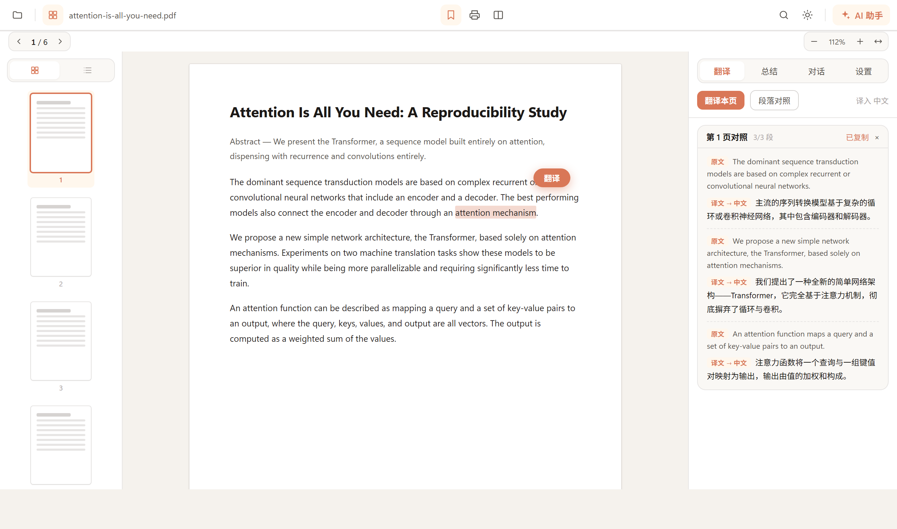
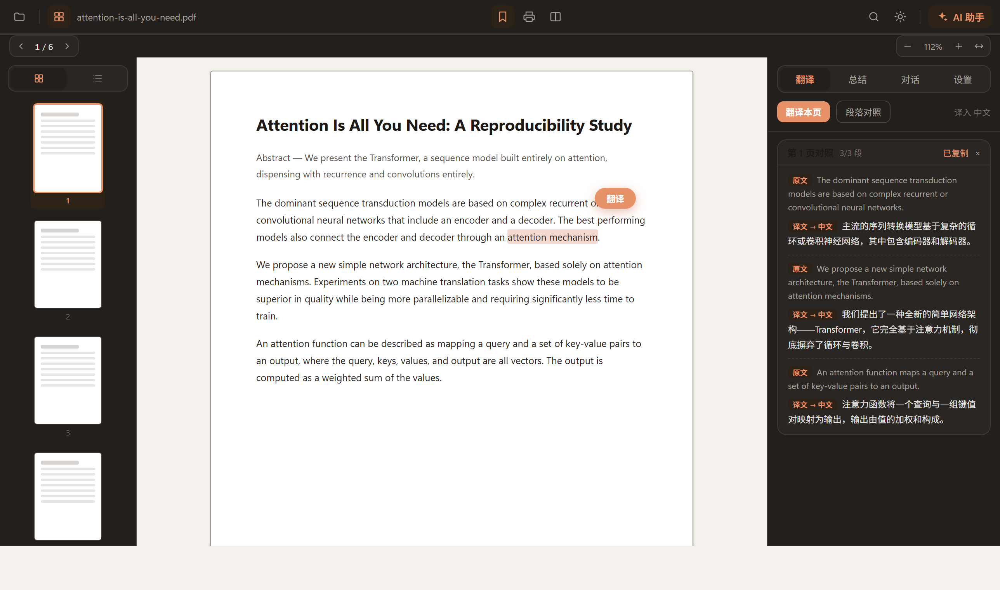

PDF 与 EPUB、多标签与续读、划词翻译、段落对照精读、一键总结、与文档对话——流式输出，接你选择的任意 OpenAI 协议端点。API Key 只存本机。
支持 GLM Coding 套餐、Kimi Code、DeepSeek、通义千问、豆包、硅基流动、Ollama 等


不做臃肿的全能编辑器——只把「读文献 + AI」这一件事做透。
一键把当前页变成原文/译文成对对照，逐段并行流式——读外文文献不用再来回切窗口。
选中即译，流式输出；对推理模型做了专门处理，思维过程自动置灰不碍眼。
当前页、选区或整份文档的一键结构化总结；对话基于你正在读的内容作答。
Ctrl+F 从当前页向外渐进扫描全文档，高亮全部命中，Enter/Shift+Enter 上下跳转。
多标签、续读、双页视图、缩略图、目录、全文搜索、深色模式、打印——基本功，认真做。
章节流式排版、字号调节、书内搜索与深色模式——电子书享受同一套 AI 工作流。
三色高亮 + 笔记、批注面板、Obsidian 友好的 Markdown 导出——你的阅读笔记永远属于你。
UPDF 把 AI 锁在自己的订阅配额里；PDFGist 直连任意 OpenAI 协议端点——包括你已经付费的编程套餐。
预设内置各套餐专属端点（如 open.bigmodel.cn/api/coding/paas/v4），模型列表按需拉取，一键测试连接。
设置与 API Key 保存在本机用户配置目录，绝不上传。
没有中间服务器，应用只和你配置的端点通信。
AGPL-3.0，接触你文档的每一行代码都可查证。